2日目です＾＾
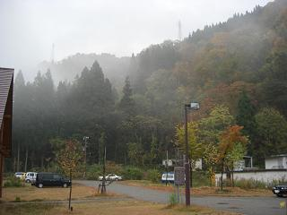 外に出てみると、、雨です。。 晴れてたら「早朝メンテでも」ってことでしたがこの天気では＾＾； |
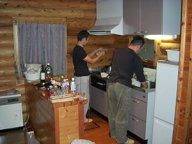 朝早くから準備するむーさんとゴンザレスさんm(__)m 朝食にもカニが！ |
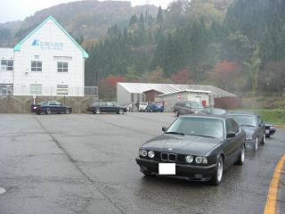 そして、ミュージアム巡りへ出発ヽ(･∀･)ﾉ |
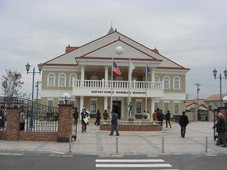 最初の目的地は、松井秀樹ムュージアムです。 |
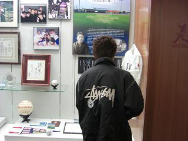 熱心なファンなんだなぁ。。なんて思ってよく見てみると アルタァさんでした（笑 いつの間にこんな小技を＾＾； |
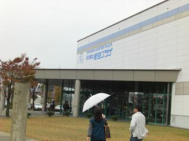 次に向かったのが航空プラザ。 飛行機やヘリコプターが展示してありました。 |
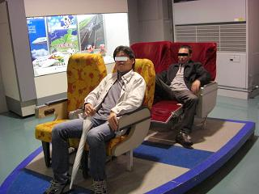 体験コーナーでの１コマ（笑 |
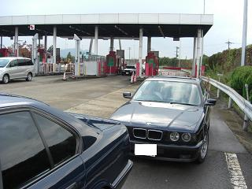 つづいて、、高速道路に乗り福井県へ。 |
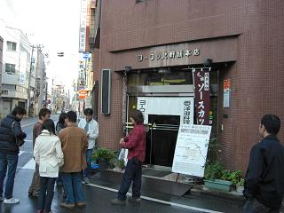 Ｂ級グルメツアーでここは外せません＾＾ ソースカツです！ |
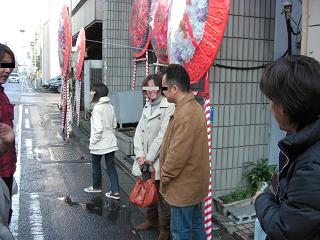 ここでむーさんご一家とお別れ。。 お世話になりましたヽ(^O^)ノ |
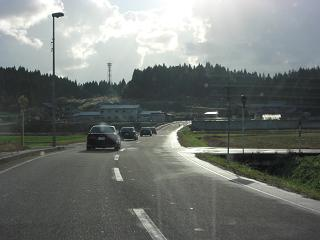 越前海岸へ向かいます。 |
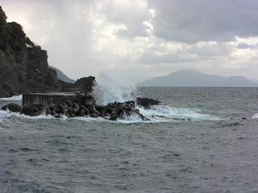 この日は風が強く、海も荒れてました。 「１日天候がずれていたらカニは調達できなかったでしょう」 とFanaticさん。 |
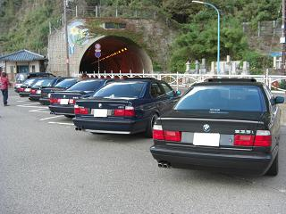 越前海岸で休憩して、 |
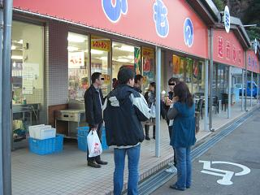 お土産やさんへ＾＾ |
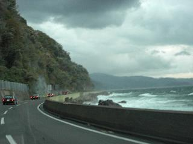 越前海岸を通り、帰路へ(・∀・｀*)ﾉ この後、去年のように大雨に襲われる。。 |
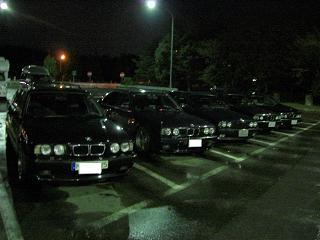 神田SAで休憩しここで解散です。 今回も幹事のFanaticさん シェフむーさん、ゴンザレスさんをはじめ みなさんのおかげで楽しいグルメツアーでした＾＾ |